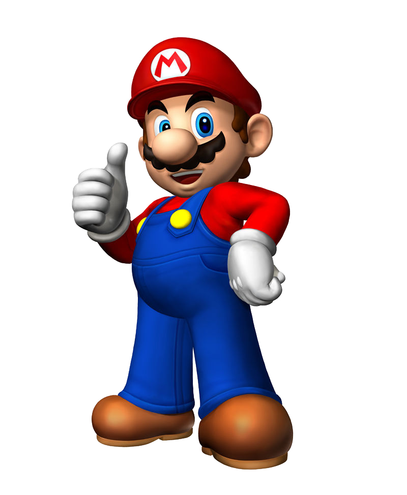

"Wa-hoo!"
Här är historien om Super Mario:

Du trodde kanske att du visste allt om den lilla italienska mannen med den ljusa rösten som krossar sköldpaddor?
Men här är några saker du säkert inte vet.
I slutet på oktober blev äntligen "Super Mario Odyssey" officiellt lanserat.
Av den anledningen besöker vi Bergsala AB, Nintendos huvudkontor i Kungsbacka, för att ta reda på hur allting började.
Den 13 september 1985 föddes en liten karismatisk man vid namn Mario. Den unge designern Shigeru Miyamoto visste inte då att han gett liv till det som skulle bli världens mest kända spelkaraktär.
– De flesta hade sitt första möte med Mario i spelet ”Super Mario Bros”, som släpptes till konsolen NES (Nintendo Entertainment system) 1985.
Men Mario-karaktären är faktiskt ännu äldre,
säger Patrik Johansson,
PR-ansvarig för Bergsala AB i Norden.